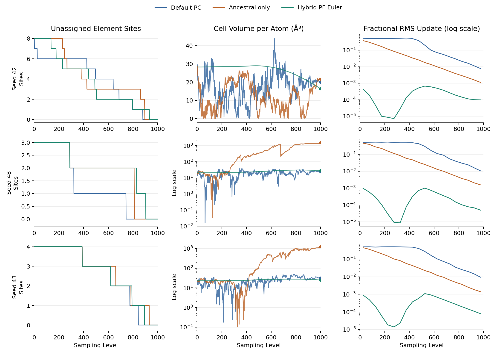
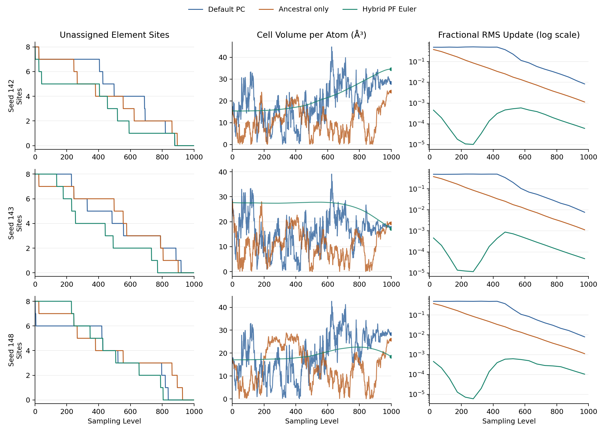

在 hkust 的单张 RTX A6000（GPU 7）上，我们用同一份冻结的 MatterGen base 权重，比较了 3 个种子、每个种子 3 条真实生成轨迹。三个种子都得到三种不同的最终组成。 连续变量采用概率流 Euler 更新后，每级的分数坐标变化显著减小。改用仅含 ancestral predictor 的配置时，有 2 个种子的最终晶胞体积明显放大。全部比较使用未经弛豫的生成端点。以下结果刻画采样路径及几何差异；物理稳定性需要后续计算。
一眼看懂实验
同一行里的三条线从完全相同的原子数、元素掩码、分数坐标和晶格出发。向右是模型采样进度。第一列数还有多少位点的元素未定，第二列量每个原子分到的晶胞体积，第三列量连续两个噪声级之间的位置更新大小。第三列按约 50 个相邻级分箱求均值，纵轴为对数。橙色曲线在后两行超出常规绘图范围，这两行的体积也使用对数轴。

| 采样方法 | 连续变量处理 | 每个样本实测网络调用 | 采样耗时中位数 | 平均每级分数坐标 RMS 的跨种子中位数 |
|---|---|---|---|---|
| PC | 官方 ancestral predictor，并在每一级做一次 Langevin 校正 | 2,000 | 66.62 s | 0.28076 |
| Ancestral only | 保留同一个 ancestral predictor，移除 Langevin 校正 | 1,000 | 31.04 s | 0.09136 |
| Hybrid PF Euler | 连续概率流漂移的一阶 Euler，分数坐标做周期包裹 | 1,000 | 30.47 s | 0.000324 |
单卡九次采样用时合计 385.56 秒。计时包括网络推理、采样更新、每条原始记录的 CPU 拷贝及 GPU 同步。权重加载、一次预热、CIF 与绘图等文件输出在计时区间之外。三种方法的执行次序随种子轮换。减少一半网络调用可以解释相当一部分加速；两种 1,000 次调用的方法耗时相近。一个固定设备和三个种子的结果只宜作为本次演示的成本记录。
混合 Euler 的小步更新累积成了可测的结构变化。按原始站点索引配对初态与独立 final，将每轴分数坐标差按周期折回后计算跨站点 RMS，种子 42、48、43 分别为 0.183、0.235、0.266。三个晶胞的体积也有变化，每原子体积分别从 28.26 → 16.39、20.84 → 27.83、23.27 → 25.08 ų。这些数值量化起点到终点的净变化；完整路径的单步变化量见上表。九组的初始体积、终态体积、有符号体积变化和位点净位移均见逐样本数据。
逐个种子的最终结构
体积取原生晶胞行列式的绝对值除以站点数，单位为 ų/atom。最短距离考虑周期镜像，包括同一站点的非零晶格平移。表内化学式记录该晶胞的元素计数。
| 种子 | 采样方法 | 最终组成 | 每原子体积 | 最近周期间距（Å） |
|---|---|---|---|---|
| 42 | PC | Li₅Tl₂Pb | 20.03 | 2.898 |
| 42 | Ancestral only | LiCu₂SiSe₄ | 21.62 | 2.314 |
| 42 | Hybrid PF Euler | Ta₄BMo₃ | 16.39 | 2.223 |
| 48 | PC | NdDyC | 24.81 | 2.462 |
| 48 | Ancestral only | Rb₂Se | 1,550.08 | 3.913 |
| 48 | Hybrid PF Euler | NdDyGa | 27.83 | 3.022 |
| 43 | PC | Nd₂HoLu | 32.30 | 3.528 |
| 43 | Ancestral only | Rb₃K | 1,233.09 | 3.717 |
| 43 | Hybrid PF Euler | LiHoLuIn | 25.08 | 3.117 |
适合课堂展示的一个镜头：选 seed 48，把三条轨迹对齐到同一噪声级。先让观众比较体积曲线，然后打开各方法独立保存的 final。Ancestral only 的晶胞三个边长约为 185–190 Å，原生晶格矩阵的条件数为 159，同组 PC 和 Hybrid PF 的条件数分别为 2.54 和 2.25。最近周期间距仅提供局部几何信息，这个例子里最醒目的差异来自晶胞的整体形状与体积。后续可把同一个 CIF 交给材料组员评估。每个种子的初态从头抽取，采用下述成对随机流设置，编号与先前生成库共享 seed 不代表最终材料相同。
固定采样器，只换同样大小晶胞的噪声起点
原先三个种子对应 8、3、4 个位点，种子同时决定后续随机流。为隔离噪声起点，我们再次运行全部三种采样器。每条轨迹均用 base 权重、8 个位点、全 MASK、空性质条件、相同的 1,000 个噪声级。只在从先验抽取分数坐标与晶格时改变 seed（142、143、148）。每次反向采样前重置连续 RNG 为 10042、离散 RNG 为 20042。同一采样器的起点比较使用相同的随机数安排，跨采样器时各更新规则对连续随机数的消耗方式会改变。运行采用一张 RTX A6000，batch size 为 1。
| 初态种子 | 默认 PC | 仅祖先预测 | 混合概率流 |
|---|---|---|---|
| 142 | LiTl₅Sn₂ · 28.25 | TlCu₂SiSe₄ · 24.30 | CsTl₃Sn₂Pb₂ · 34.64 |
| 143 | Sm₂Cu₂Si₄ · 17.61 | Tl₂Cu₄S₂ · 19.40 | Ta₄Mo₄ · 17.13 |
| 148 | Li₂Pb₆ · 28.36 | Tl₂Cu₂Se₄ · 25.87 | LiCu₂SiS₄ · 18.41 |
单元格给出独立终态的晶胞组成与每位点体积（ų）。纵向看，同一 PC 下，142 与 148 的体积相近（28.25、28.36 ų），两者的组成为 LiTl₅Sn₂ 与 Li₂Pb₆。143 给出 Sm₂Cu₂Si₄，体积为 17.61 ų。三者保持了 8 个位点，终态均无 MASK，最后一个 MASK 消失的层级分别为 879、919、838。横向看，同一 143 初态改换求解器得到另外两种组成。两种读法回答独立问题。小样本可展示多样性，无法估计这些化合物在模型分布中的概率或物理稳定性。九个终态指标 · 9,000 个噪声级 · 权重与随机流元数据（课程仓库，需权限）

原生记录每条为 2,000（PC）或 1,000（另外两种），共 12,000 条，另存每条的独立终态。前端以 51 个对齐的存档时刻播放晶胞，曲线保留每个噪声级的第一条记录。三种初态的分数坐标与晶格均不同。原生张量按种子跨三种求解器逐字段一致；保存的 CIF 与独立终态在组分、晶格参数和周期距离上通过检查。以下命令在个人目录内执行。执行日志（课程仓库，需权限） · 原批次脚本快照（课程仓库，需权限）
CUDA_VISIBLE_DEVICES=6 OMP_NUM_THREADS=2 OPENBLAS_NUM_THREADS=1 \
external/mattergen/.venv/bin/python scripts/run_paired_samplers.py \
--weights external/models/checkpoints/mattergen_base --output runs/fixed_prior_8 \
--seeds 142 143 148 --fixed-sites 8 --reverse-seed 42
external/mattergen/.venv/bin/python scripts/analyze_paired_samplers.py runs/fixed_prior_8数学与代码依据
官方配置用 1,000 个噪声级，时间从 1 递减到 0.001，每次更新取 Δt = −0.001，最后一次更新落到 0。官方 PC 先更新连续 corrector，再计算三类变量的 predictor。类别使用官方 D3PM 反向后验的分类采样，模型输出 logits。两个消融均保留全部 1,000 次类别更新。三个方法用相同的噪声级网格，本实验比较的是每级的更新规则。官方采样配置 · 采样循环 · 官方类别更新
在固定原子数下，所用连续分量的扩散幅值与时间和原子数有关。对于这些坐标的前向 SDE，漂移为 f，扩散幅值为 g，模型估计的数据分数为 sθ。混合分支用下式沿时间递减方向更新坐标与晶胞：
x_next = x + Δt [ f(x,t) − ½ g(t)² sθ(x,element_state,t) ]分数坐标使用按原子数缩放的 wrapped VE 系数，以及模型转换到分数坐标系的 score。每次更新用模 1 回到周期单元。晶胞使用 lattice VP 的以原子数为条件的极限均值、方差和对称晶胞噪声表示，沿独立的对称分量更新。没有对元素类别连续插值。类别 logits 仍依赖当前几何，即使给三种方法相同的分类随机数，元素也可能在不同时间确定并产生不同的组成。这个实现是连续概率流与 D3PM 的混合数值实验，整条轨迹仍有离散采样随机性。连续理论对精确 score 的结果，并不能证明这里的有限步、混合变量和估计 score 与原模型具有相同终点分布。概率流 ODE · 晶体 SDE 实现 · 本文实现（课程仓库，需权限）
配对随机性。 原子数取自官方 ALEX_MP_20 分布，每个种子用官方 prior 生成一次初态，三种方法分别读取独立克隆。先核对每条轨迹的第一条原始记录与 prior 的 SHA-256，再从下载的 NPZ 对每个连续分量和类别逐值校验。连续更新的随机种子为 seed + 10,000，类别更新使用独立 CUDA RNG 流，种子为 seed + 20,000，每次调用恢复官方 D3PM predictor，之后恢复连续 RNG 的状态。PC 与 ancestral 的连续步骤消耗不同数量的随机数，配对控制的是共同初态和类别随机流。正因这一随机流约定，PC 的名称表示采用官方 PC 更新规则。这些是本实验的独立结果集。
量化与核验。 位置更新量先将每个站点每个分数坐标分量的差映射到 [−0.5, 0.5)，再对三轴分量平方求和、跨站点平均并开根号，最后跨相邻的 999 个噪声级取均值。该量无单位，对分数坐标的跨界表示稳健。在斜晶胞中，以 Å 表示的最短实空间位移有不同定义。该量衡量算法轨迹的视觉平滑度，不能决定晶体的能量、动力学稳定性或生成分布的质量。对齐点取每个噪声级更新前的状态，PC 同时保留了该级校正后的原始记录。端点统一取最后一次 predictor 的独立 mean，按官方约定离散维度取最大后验类别。9 个 CIF 回读后逐项核对了组成、晶格边长和角度、按元素对分组的所有周期站点距离，再校验各文件 SHA-256。极斜晶胞的 float32 边长/角度重建会产生可测误差，9 个样本中最大的距离差为 0.000252 Å（seed 48 ancestral）。另有两个解析测试检查平稳高斯晶胞的零概率流，以及周期坐标的噪声缩放和越界包裹。
数据与复现
- 所有样本的终态指标 · 9,000 个对齐的每级指标 · 实测环境及模型哈希（课程仓库，需权限） · 默认配置快照（课程仓库，需权限）
- 每个
seed{seed}_{mode}/文件夹包含原生全轨迹trajectory.npz、独立final.cif、运行记录result.json和精简前端数据display.json。示例见 seed 48 混合采样展示帧（课程仓库，需权限） 和 seed 48 大体积端点 CIF。 display.json的frames有 51 个按共同噪声级抽取的观测，final为独立终态。坐标为分数坐标，原生晶格是 Å 单位行向量，笛卡尔投影使用frac_coords @ cell。原始 101 表示未解掩码。数据保留拟合轨迹的独立位点顺序，动画是算法状态序列。- 生成及分析命令在
members/tk/执行，使用原有的 MatterGen 推理环境（课程仓库，需权限）。指定一个新的输出目录可以保留已有结果。同一算法、种子及相匹配的硬件和依赖可用于复测。模型、代码版本、设备与随机种子已经记录；GPU 并行归约可能存在舍入差异。
CUDA_VISIBLE_DEVICES=7 OMP_NUM_THREADS=2 MKL_NUM_THREADS=2 OPENBLAS_NUM_THREADS=2 \
external/mattergen/.venv/bin/python scripts/run_paired_samplers.py \
--weights external/models/checkpoints/mattergen_base \
--output runs/sampler_pair_reproduction --seeds 42 48 43
external/mattergen/.venv/bin/python scripts/analyze_paired_samplers.py runs/sampler_pair_reproduction
external/mattergen/.venv/bin/python -m pytest -q tests/test_probability_flow_sampler.py